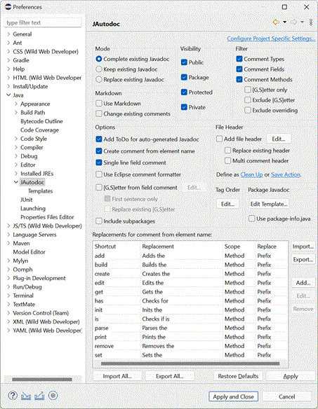
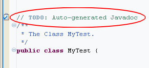
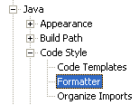
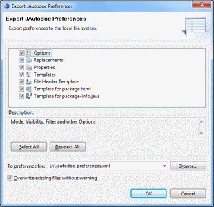
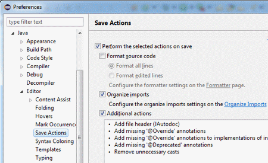
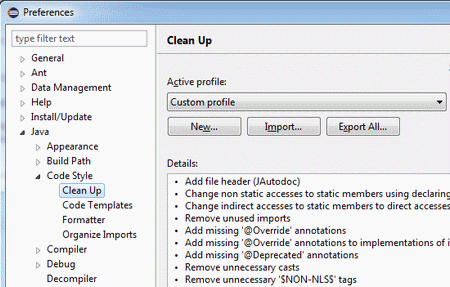
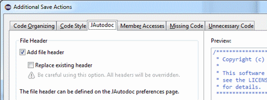
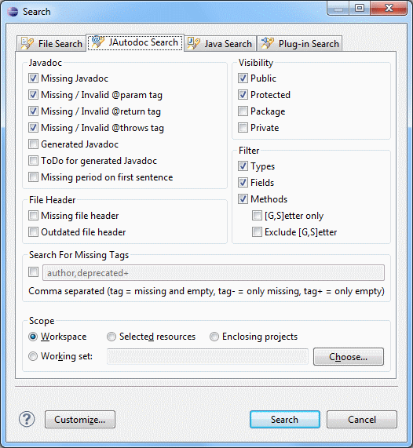
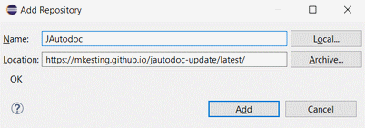

|
JAutodoc is an Eclipse
Plugin for automatically adding Javadoc and file headers to your source code.
It optionally generates initial comments from element name by using
Velocity
templates
for Javadoc and file headers.
Features JAutodoc has the following features:

Mode
-
Complete existing Javadoc
Existing Javadoc will not be touched. Only missing tags will
be added and so far undocumented elements will be documented.
-
Keep existing Javadoc
Existing Javadoc will not be touched. Missing tags will not
be added, but so far undocumented elements will be documented.
-
Replace existing Javadoc
Existing Javadoc will be totally replaced by the generated
Javadoc. Be sure, if you use this option.
Visibility
-
Public, protected, package or private
Decide for which visibilities you like to create Javadoc.
Filter
-
Comment Types, Fields, Methods or Getter/Setter only
Decide for which kind of members you like to create Javadoc.
Options
-
Add ToDo for auto-generated Javadoc
Add ToDo flag in order to find all sources with
auto-generated Javadoc. This is done once only for a
source file.

-
Create comment from element name
With this option checked JAutodoc will generate comments
from element name as shown below. Templates
can be used, to define how this comments will be created. Additionally for
fields, methods and parameters shortcut Replacements
can be defined.
Fields:

Methods:

-
Single line field comment
Option to create single line field comments.

-
Use Eclipse comment formatter
Use Eclipse internal formatter to format the generated comments.
The format can be defined under the preferences of

-
[G,S]etter from field comment
Create Getter/Setter comments from related field comment.
-
First sentence only
Use first sentence only or complete field comment.
-
Replace existing [G,S]etter
Replace or keep existing [G,S]etter comment.
-
Include subpackages
Include subpackages when adding Javadoc for package members.
Tag Order
Configuration of Javadoc tag order.

File Header
Package Javadoc
Replacements
When creating comments from element name, shortcuts inside of
fields, methods and parameters can be replaced by another
text. For example "set" will be replaced by
"Sets the" or "db" can be expanded to
"Database".
These replacements can be added,
deleted or changed via the preferences.
The scope of an replacement can be "Field",
"Method" or "Both". Use "Field" for
fields and parameters. Optionally only the prefix (Prefix) or every
occurrence (All) of the shortcut can be replaced.
Note:
Shortcuts are case insensitive. They are detected by changes between
upper and lower case letters inside the element name (e.g. setDbName).
Import/Export All...
Import/Export of the complete configuration from/to a single file.

Clean Up and Save Action for file headers
Add/Replace file headers on clean up or each save of the Java editor.



Usage
Task Search
JAutodoc allows to search for tasks like missing Javadoc, file headers or special tags.

Most of the options are self-explaining. Here's the rest:
- Generated Javadoc
Search for Javadoc comments that exactly match the one generated by JAutodoc.
- Outdated file header
Search for file headers that do not match the one generated by JAutodoc.
- Search For Missing Tags
Search for missing tags like @author. Add a minus to the tags name,
if existing tags without message should not be reported or a plus, if only existing
tags without message should be reported (e.g. @deprecated without a description).
Changes
- 2019-05-30 Version 1.14.2
- Bugfix for Ant Task
- Bugfix for interface methods
- 2019-03-25 Version 1.14.1
- Bugfix for missing JAXB in Java ≥ 11
- 2016-06-19 Version 1.14.0
- Improvements on name splitting with support for digits
- Bugfix for import all preferences
- 2015-06-21 Version 1.13.0
- Keep documented unchecked exceptions
- Prefix configuration for [G,S]etter from field comment
- Place Javadoc above direct related (same line or line above) method/field comments
- Some minor fixes for Eclipse 4.5 (Mars)
- 2015-01-04 Version 1.12.0
- 2014-07-21 Version 1.11.1
- Fixed Velocity class loading conflict with m2e plugin in Eclipse Luna
- 2014-01-12 Version 1.11.0
- New options for [G,S]etter from field comment
- Configuration dialog for Javadoc tag order
- Some minor improvements
- Requires Eclipse 3.7+
- 2012-05-31 Version 1.10.0
- Import/Export of the complete configuration from/to a single file
- Recognition of global pre- and suffixes of fields for [G,S]etter
- Support for evaluation of annotations in templates
- Requires JRE 1.6
- 2011-04-24 Version 1.9.0
- New option: Exclude [G,S]etter
- New option: Include subpackages when adding Javadoc for package members
- Bugfix for {@inheritDoc}
- Contribution to Eclipse help
- 2010-08-12 Version 1.8.0
- Preview Dialog
- Automatic recognition of global parameter/field prefixes.
(Preferences/Java/Code Style)
- Support for package-info.java
- Fixed html tag problem in return doc
- 2010-03-28 Version 1.7.0
- Search page for missing Javadoc and file headers
- Requires Eclipse 3.4+
- 2010-02-09 Version 1.6.0
- Support for Eclipse 3.6
- New option: [G,S]etter from field comment
- Support for Generics
- Escaping of # in templates by \#
- Fixed encoding problems.
- Some minor fixes and improvements.
- Requires JRE 1.5 and Eclipse 3.3+
- 2007-09-09 Version 1.5.0
- Enhanced prefix/keyword replacement.
- Escaping of dollar signs in templates by \$
- Support for Package Javadoc.
- 2007-07-10 Version 1.4.0
- Project specific settings.
- Temporary settings for single compilation units.
- Ant task for Eclipse.
- Support for multi comment headers.
- General improvements for Eclipse 3.3
- 2007-05-01 Version 1.3.0
- Using Velocity
templates for Header and Javadoc.
- Template variables (e.g. $user, $date, $project_name, ...)
- Context menu for adding Header only.
- Filter options for Types, Fields, Methods and Getter/Setter.
- Corrected order of parameter documentation.
- Improvement for non-Javadoc.
- Support for {@inheritDoc}.
- New Update Site http://jautodoc.sourceforge.net/update/
- 2007-01-05: Version 1.2.0
- Consider member visibility.
- Use non-Javadoc for inherited methods.
- Editor shortcut Ctrl-Alt-J.
- Selection model in editor changed.
- Prefix replacement for fields and parameters.
- 2006-10-20: Version 1.1.0
- Single line field comments.
- Use Eclipse comment formatter.
- Add/Replace file header.
- 2006-08-20: Version 1.0.0
License JAutodoc is licensed under the
Eclipse Public License - v 1.0
JAutodoc comes with the
Velocity
Template Engine 1.5, which is available under the
Apache Software License - v 2.0
Download and Installation Download JAutodoc
here and unzip the file
to the Eclipse directory or use the Update Site
http://jautodoc.sourceforge.net/update/

Contact JAutodoc is written by
Martin Kesting.
|
|